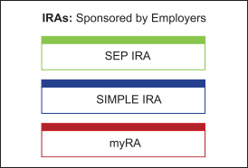

Our discussion of “Key Issue 4 – Tax-Efficient Savings Strategy” continues as we change our focus from “IRAs Established by Individuals” to “IRAs Established by Employers.”

Two of the least complex and least costly retirement plans offered by employers are Simplified Employee Pension Plans (SEPs) and Savings Incentive Match Plan for Employees (SIMPLEs). These plans have some qualified plan characteristics and are also governed by rules similar to the Traditional IRA. Their primary differences from IRAs are two-fold:
We begin with a presentation of the SEP IRA.